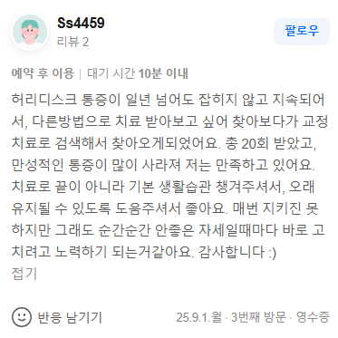

치료 증례
"허리디스크 통증이 일년 넘어도 잡히지 않고 지속되어서, 다른방법으로 치료 받아보고 싶어 찾아보다가 교정치료로 검색해서 찾아오게되었어요. 총 20회 받았고, 만성적인 통증이 많이 사라져 저는 만족하고 있어요. 치료로 끝이 아니라 기본 생활습관 챙겨주셔서, 오래 유지될 수 있도록 도움주셔서 좋아요."

1년 이상 지속되는 허리디스크의 만성 통증은 단순히 허리 주변의 근육이 뭉친 수준을 넘어섭니다. 무너진 골반을 기반으로 요추 분절 간의 압력이 비정상적으로 증가하여 디스크가 탈출하고 신경을 물리적으로 압박하는 '구조적 변위'가 고착화된 상태입니다. 단순히 늦은 시간까지 열려있는 접근성만을 강조하는 365일 야간진료 한의원이나, 겉근육 위주로 풀어주는 근막이완 추나, 순간적인 관절 마찰음(스러스트)에만 의존하는 일반 교정, 그리고 인대 조직을 찢는 도침 치료만으로는 좁아진 척추 간격을 근본적으로 넓히는 데 구조적 한계가 존재합니다. 신경을 누르는 압박 벡터 자체를 해소하지 못하면 통증은 치료 직후에만 반짝 나아질 뿐 금세 재발합니다.
만성 요통과 허리디스크를 극복하기 위해서는 퇴행성 척추 질환의 근본적인 구조적 원인 개선을 목표로 하는 솔루션이 필요합니다. 바디올한의원의 SART(공간척추정형술)는 전통 정골의학(Osteopathy) 및 추나요법의 생체역학적 원리를 기반으로 발전하여, 척추 분절 간의 물리적 공간을 확보하는 보존적 교정 기법입니다. 특수 교정 도구를 사용하여 틀어진 골반과 천장관절의 중심축을 바로잡고, 강하게 유착된 요추의 인대와 뼈의 간격을 미세하게 두드려 분리해 냅니다. 이를 통해 디스크 내부의 압력을 낮추고 신경이 지나가는 통로를 확장합니다.
이러한 과학적 기전은 광교나 동탄 등 타 지역에서 수많은 치료를 받고도 호전되지 않았던 환자들이 수술 전 단계에서 생체역학적 보존 치료의 대안으로 수원 인계동 바디올을 찾아오시는 이유입니다. 실제 대규모 체계적 문헌고찰에 따르면, 척추 분절의 물리적 구조를 바로잡는 수기 교정 치료가 요추 추간판 탈출증 및 만성 요통 환자의 신경 압박을 완화하는 데 매우 유효함이 입증되었습니다[1][2].
무너진 골반의 정렬을 맞추고, 강한 수동적 충격 없이 정밀한 교정 도구로 척추체 사이의 공간을 부드럽게 확보하여 디스크 압박을 해소하는 안전한 척추 재건 교정입니다.
신경이 눌려 발생한 허혈성 통증과 척수 염증을 천연 약침을 통해 안전하게 제어하고, 약해진 디스크 주변 인대를 강화하여 올바른 자세가 오랫동안 유지되도록 돕습니다.
[1] Kreiner DS, et al. (2014). An evidence-based clinical guideline for the diagnosis and treatment of lumbar disc herniation with radiculopathy. The Spine Journal. (PMID: 24239447 / DOI: 10.1016/j.spinee.2013.08.003)
[2] Chou R, et al. (2017). Noninvasive Treatments for Acute, Subacute, and Chronic Low Back Pain: A Clinical Practice Guideline From the American College of Physicians. Annals of Internal Medicine. (PMID: 28192789 / DOI: 10.7326/M16-2367)